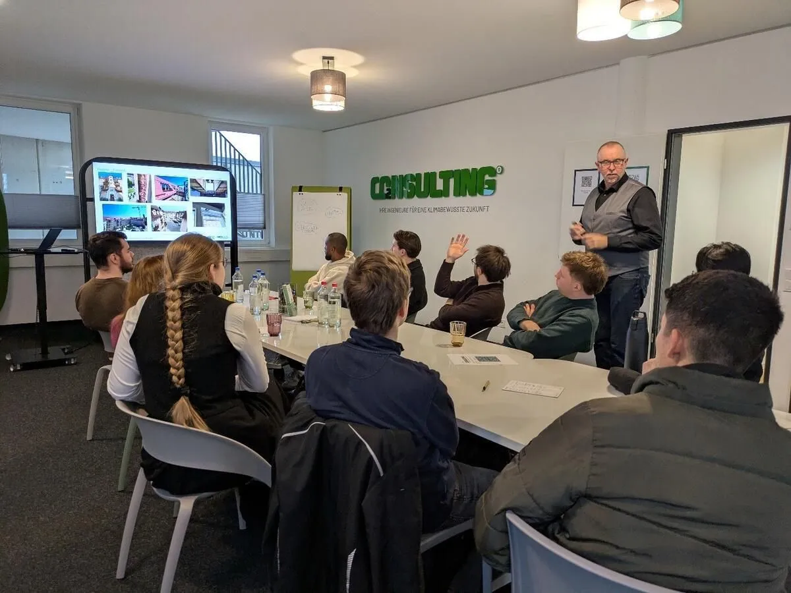
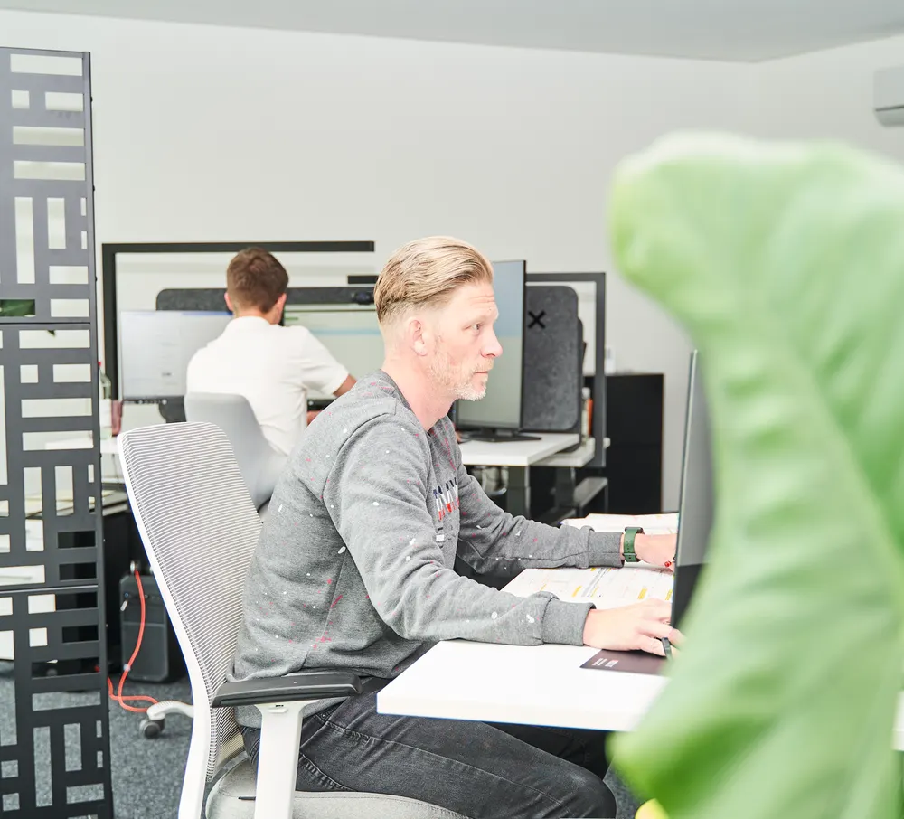

Unsere Mission: Nicht nur Energie. Das ganze Gebäude.
Ihr CO2NSULTING-Team der Energieberatung Schmidt W.E.S.T. GmbH und Energieberatung Schmidt S.Ü.D. GmbH: ein Ingenieurbüro für energetische Gebäudeoptimierung in Aachen und München. Wir betrachten Konstruktion, Bauphysik, Versorgungstechnik, Materialien und Nutzung als ein System – und beraten Sie bereits vor der Planung. Lassen Sie uns gemeinsam die Zukunft gestalten – nachhaltig, effizient und umweltfreundlich.

Haltung
Das Gebäude als System.
Neun Ebenen, die sich gegenseitig bedingen. Wer eine davon isoliert optimiert, verschiebt das Problem meist nur. Klicken Sie sich durch.
Gebäudehülle
Konstruktion, Dämmebene, Wärmebrücken und Luftdichtheit – die Hülle entscheidet über den Bedarf, bevor Technik ihn deckt.
Unsere Werte
Nachhaltigkeit, Unabhängigkeit, Transparenz.
Weil wir nicht nur Energieberatung machen, sondern nachhaltige, energetisch und baubiologisch optimierte Lösungen bieten. Wir verbinden technisches Know-how mit einem tiefen Verständnis für gesundes und energieeffizientes Bauen – individuell, durchdacht und zukunftsorientiert.
Transparenz
Wir legen alle Kosten und möglichen Einsparungen offen und erklären alle vorgeschlagenen Maßnahmen verständlich.
Vertrauen
Wir schaffen eine solide Grundlage für Planung und Baubegleitung und überwachen die gesetz- und normkonforme Umsetzung Ihres Vorhabens.
Verständlichkeit
Auch komplexe technische Details vermitteln wir verständlich und begleiten Sie durch den gesamten Prozess Ihres Projekts.
Kommunikation
Offene und klare Kommunikation mit allen Beteiligten – über alle Gewerke und Projektphasen hinweg.
Fachwissen vor der Planung
Ein hohes Maß an Expertise – bereits bevor geplant wird. Dort entstehen die Entscheidungen mit der größten Wirkung.
Volldigitale Arbeitsweise
Digitale Tools vereinfachen viele Prozesse und machen Ergebnisse schneller, präziser und nachvollziehbar.
Disziplinen
Unsere Disziplinen.
Energieberatung ist bei uns keine Einzeldisziplin. Unser Team deckt eine Vielzahl von Fachbereichen und Qualifikationen ab – und arbeitet projektbezogen zwischen Aachen und München.
Architekt*innen
Ganzheitliche Energieberatung für nachhaltiges BauenDurch die frühzeitige Definition klarer Ziele und die enge Zusammenarbeit mit anderen Architekt*innen und Fachplaner*innen integrieren wir Innovationen und neue Prozesse des nachhaltigen Bauens in die Immobilienwirtschaft und unsere Projekte. Durch sorgfältige Planung und Umsetzung stellen wir sicher, dass spätere Anpassungen, die zu Zeit- und Kostenverlusten führen, minimiert werden. Unsere Projekte erfüllen nicht nur die aktuellen Anforderungen an Energieeffizienz, sondern sind auf zukünftige Entwicklungen vorbereitet.
Ingenieur*innen
Nachhaltige Rohstoff- und EnergieversorgungWissen über erneuerbare Energien, Netzintegration und Energiespeicherung – eng verbunden mit Kreislaufwirtschaft und CO₂-Bilanzen. Ein weiterer Fokus liegt auf der technischen Gebäudeausrüstung und deren Relevanz.
Bauingenieur*innen
Schwerpunkt Konstruktiver IngenieurbauNeben dem grundlegenden Verständnis für das Konstruieren und Berechnen von Gebäuden vertiefen wir Tragverhalten, Entwurf und Bemessung von Tragwerken sowie die Auswahl der richtigen Baustoffe unter technischen und wirtschaftlichen Gesichtspunkten.
Architekt*innen
Resource Efficiency in Architecture and PlanningBericht einer Architektin: „Ich habe einen Masterabschluss in Resource Efficiency in Architecture and Planning von der HafenCity Universität Hamburg, ergänzt um ein Semester Building and Architectural Engineering am Politecnico di Milano. Meine Masterarbeit am Cycle-Oriented Construction Institute der RWTH Aachen befasste sich mit der energetischen Optimierung von Wohngebäuden durch eine zusätzliche Fassadenschicht. Als Projektingenieurin habe ich an Energieaudits, Gebäudesimulationen und Lebenszyklusanalysen (LCA) mitgewirkt.“
Bauingenieur*innen
Bauphysik, Holzbau, Werkstoffe und klimagerechtes BauenBauphysik beschäftigt sich mit den physikalischen Zusammenhängen auf Bauteil-, Raum- und Gebäudeebene – inklusive klimatischer Einflussfaktoren sowie Heizungs- und Kühlsystemen. Der Holzbau fokussiert sich auf den Baustoff Holz und weitgespannte Holztragwerke, die Vertiefung Werkstoffe auf Beton und mineralische Baustoffe. Klimagerechtes Bauen bedeutet die optimale Gestaltung der Gebäudehülle für ein angenehmes Raumklima und die Integration nachhaltiger Energiesysteme.
Umweltingenieurwissenschaften
Nachhaltige SystemeDer Studiengang an der RWTH Aachen vereint Siedlungswasserwirtschaft, Recycling, Nachhaltigkeit, Verfahrenstechnik und Bauphysik – klassische Ingenieurmethoden mit einem ganzheitlichen Ansatz für Umwelt-, Ressourcen- und Klimaschutz: klimaresiliente Infrastrukturen, Wassermanagement, energieeffiziente Baukonzepte. Das Life Cycle Assessment (LCA) analysiert Umweltwirkungen über den gesamten Lebenszyklus.
Baubiologie
Fundierte Baubiologie nach den Vorgaben des IBNBaubiolog*innen sind Expert*innen für gesundes und nachhaltiges Bauen und Wohnen: gesundes Raumklima, Energieeffizienz, Baustoffkunde und Bauphysik, Schallschutz und Bauakustik sowie nachhaltige Stadt- und Landschaftsplanung.
Bauingenieur*innen & Energieeffizienz-Expert*innen
Technische Ausführung fachgerecht ermittelnWir sind darauf spezialisiert, die technische Ausführung von Konstruktionen in der Planung fachgerecht zu ermitteln, bei Sonderfällen ingenieurmäßige Lösungen zu erarbeiten und in der Ausführung deren Richtigkeit sicherzustellen – als beratende Schnittstelle für Architekt*innen und Bauherr*innen.
Energietechniker*innen
Energieeffizienz und VersorgungssystemeEin Student über den Studiengang: „Ich studiere Energietechnik im Master an der RWTH Aachen, zuvor Maschinenbau mit Schwerpunkt Energietechnik an der THGA Bochum. Ich habe fundierte Kenntnisse über erneuerbare Energien, Energieeffizienz und Versorgungssysteme gesammelt – besonders interessieren mich praktische Lösungen für eine nachhaltige Energieversorgung.“
Holzbau und Energieeffizienz
Expert*innen für HolzbauEin Student über den Studiengang: „Im Master ‚Holzbau und Energieeffizienz‘ werden neben Kenntnissen zum Baustoff Holz die gesamtheitliche Planung über bauphysikalische Zusammenhänge, moderne Gebäudetechnik und die Bewertung der Energieeffizienz, Energieberatung sowie Ökologie gefordert.“
IT, Digitalisierung & KI
Effiziente Prozesse durch moderne TechnologieAutomatisierung erledigt Routineaufgaben schneller und fehlerfrei. Unsere KI-Systeme analysieren kunden-unspezifische Daten in Echtzeit und optimieren kontinuierlich unsere Abläufe – unter Beachtung höchster DSGVO-Standards. Für Sie bedeutet das kürzere Bearbeitungszeiten und höhere Genauigkeit.

Karriere
Arbeiten an der Zukunft von Gebäuden.
Als etablierte Adresse für Nachhaltigkeit, Energieberatung, Fördermittel und Bauphysik schaffen wir unseren Mitarbeiter*innen eine abwechslungsreiche und verantwortungsvolle Tätigkeit in einem dynamischen Arbeitsumfeld. Wir legen Wert darauf, dass unsere Mitarbeiter*innen zufrieden sind und eine angenehme Unternehmenskultur mitgestalten.
Teamarbeit und Kollaboration
Wir fördern eine Kultur der Zusammenarbeit und des Austauschs. In interdisziplinären Teams arbeiten wir gemeinsam an Lösungen und profitieren von der Vielfalt der Perspektiven und Erfahrungen.
Innovative Projekte
Von der Entwicklung nachhaltiger Energiekonzepte bis zur Umsetzung energieeffizienter Bauprojekte – bei uns können Sie Ihre Ideen verwirklichen.
Praktische Erfahrung für Studierende
Bereits während des Studiums bieten wir Praktika und Werkstudent*innenstellen – Einblicke in verschiedene Projekte und Aufgabenbereiche, Theorie in die Praxis umgesetzt.
Angenehme Unternehmenskultur
Ein positives Arbeitsklima, in dem Teamarbeit und gegenseitige Unterstützung großgeschrieben werden.
Abwechslungsreiche Tätigkeiten
Spannende und vielfältige Aufgaben, die täglich neue Herausforderungen und Lernmöglichkeiten bieten.
Verantwortungsvolle Aufgaben
Die Möglichkeit, an bedeutenden Projekten mitzuwirken und einen echten Unterschied zu machen.
Dynamisches Arbeitsumfeld
Ein modernes und flexibles Arbeitsumfeld, das Innovation und Kreativität fördert – in Aachen und München.
Weiterbildung und Entwicklung
Regelmäßige Schulungen und Fortbildungen, um Fähigkeiten zu erweitern und sich auf neue Herausforderungen vorzubereiten.
Karrierechancen
Klare Aufstiegsmöglichkeiten und Unterstützung bei der Verwirklichung Ihrer beruflichen Ziele. Wir freuen uns auf Deine aussagekräftige Bewerbung.
Standorte
Aachen und München.
Aachen
Energieberatung Schmidt W.E.S.T. GmbH
Eilendorfer Straße 179
52078 Aachen
0241 980 968 50
info@co2-consulting.eu
München
Energieberatung Schmidt S.Ü.D. GmbH
Freibadstraße 30
81543 München
089 277 801 280
info@energieberatungsued.de
Jetzt beraten lassen
Lassen Sie sich jetzt von uns unverbindlich beraten!
Neubau, Sanierung oder Baudenkmal – wir beraten Sie, bevor die Planung Fakten schafft. In Aachen und München.